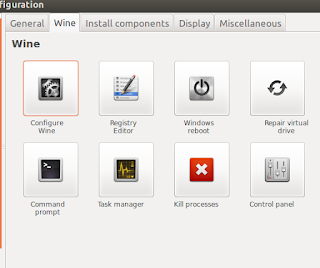
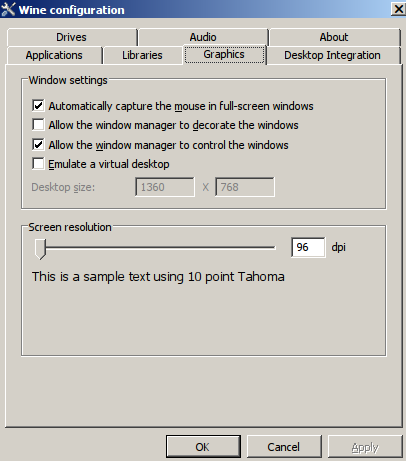
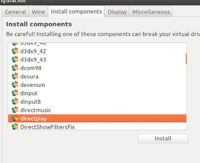
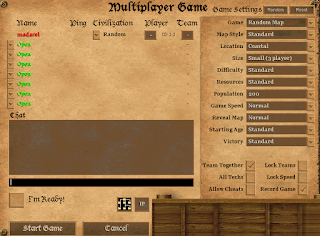

If sound does not work, change wine version to a newer one
It works!, but it has some annoying bugs with resolution and
fullscreen, so the solution I got was to make it windowed, almost
borderless and filled the screen with it. So let’s do it.
Run FixAoFE.exe in the Forgotten virtual drive
Open POL and select Forgotten
Click Configure
Tab Miscellaneous
Click “Run a .exe …”
Locate FixAoFE.exe in
~/PlayOnLinux's virtual drives/AOE2_forg/drive_c/Program Files/Microsoft Games/Age of Empires II/age2_x1/FixAoFE.exe
Enable Windowed mode
Windowed mode
Open Configure Wine

Configure Wine
Open Graphics tab, and make exactly these
selections:

Graphics settings
Open the game and choose your desired resolution in options. This
resolution will only affect in-game, it won’t affect the menu.
It still has some bugs, but it’s now playable, the inner game is
mostly free of bugs, and with the new 60 FPS feature of the Forgotten
Empires, is a net improvement.
There are two bugs that still bother me:
For some really strange reason, enemies’ Castles do not start
firing until you get really close to them, or maybe attack them. I’ve
seen this happen in the first chapter of barbarossa campaign.
Multiplayer does not work. Right now, if you try to create a
multiplayer game it will go back to the menu immediately. We can
overcome this bug by installing directplay:

Install directplay
It now Creates a multiplayer game

Multiplayer game
But still, I haven’t been able to join a multiplayer game between two
computers using the same setup, I’ve tried with LAN, with IP, disabling
firewalls, but no luck :(